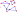

Percolation
Spread in a network with faulty connections.
Graph Theory Terms
Graph
\[G=(V,E)\]Vertices
 \[V = \{ v_1,v_2,v_3,v_4,v_5,v_6, v_7 , \\ v_8 , v_9 , v_A , v_B , v_C , v_D , v_E , \} \]
\[V = \{ v_1,v_2,v_3,v_4,v_5,v_6, v_7 , \\ v_8 , v_9 , v_A , v_B , v_C , v_D , v_E , \} \]
Order
 \[n \equiv |V| = 14 \]
\[n \equiv |V| = 14 \]
Edges
 \(E = \{ (v_2, v_4), (v_2, v_5), (v_3, v_6), (v_4, v_5), (v_5, v_6), \\ (v_6, v_7), (v_6, v_8), (v_7, v_8), (v_8, v_D), (v_8, v_E), (v_9, v_A), \\ (v_9, v_B), (v_9, v_C), (v_A, v_B), (v_B, v_C), (v_D, v_E), \} \)
\(E = \{ (v_2, v_4), (v_2, v_5), (v_3, v_6), (v_4, v_5), (v_5, v_6), \\ (v_6, v_7), (v_6, v_8), (v_7, v_8), (v_8, v_D), (v_8, v_E), (v_9, v_A), \\ (v_9, v_B), (v_9, v_C), (v_A, v_B), (v_B, v_C), (v_D, v_E), \} \)
Size
 \[M \equiv |E| = 16 \]
\[M \equiv |E| = 16 \]
Neighborhood
 \[N(v_5)=\{v_2,v_4,v_6\}\]
\[N(v_5)=\{v_2,v_4,v_6\}\]
Degree
\[d(v_5)\equiv |N(v_5)| = 3\]
Degree
Path

Path from \(v_2\) to \(v_E\): \((v_2,v_5,v_6,v_8,v_E)\)
Path

No path from \(v_B\) to \(v_3\)
Connected Components
Notable Types of Graphs
Complete Graph
Star Graph

Star Graph
Bipartite Graph
Cycle Graph
Erdős–Rényi Random Graph

Erdős–Rényi Random Graph
\(G(n,p)\)- Start with a set of \(n\) vertices \(V\)
- For each pair of distinct vertices in \(V\), \(v_i,v_j\), flip a weighted coin which lands head with prob \(p\)
- If the coin comes up heads, the edge \((v_i,v_j)\in E\).
- If the coin comes up tails, the edge \((v_i,v_j)\notin E\).
- Equivalent to removing each edge with independent prob \((1-p)\) from a complete graph.
The Random Graph
Integer Lattice
\[\mathbb{Z}\]Square Lattice
\[\mathbb{Z}^2\]Real World Examples
Neurons
Electric Grids

Electric Grids
Transportation
Social Networks
Rumors
Disease
Guaranteed Transmission

Breadth-First Search
- Each vertex is marked as Undiscovered, Discovered, or Visited.
- One vertex starts as Discovered, the rest Undiscovered
- Each period:
- For each vertex which was already Discovered at the start of the period:
- Mark the vertex as Visited
- Mark each of its Undiscovered neighbors as Discovered
Breadth-First Search
A vertex will be visited iff there is a path to it from the initial Discovered vertex.
Breadth-First Search
Undiscovered ~ Susceptible
Discovered ~ Infectious
Visited ~ Removed

Bernouilli Transmission
- One vertex starts as Discovered, the rest Undiscovered
- Each period:
- For each vertex which was already Discovered at the start of the period:
- Mark the vertex as Visited
- For each Undiscovered neighbor, mark that neighbor as Discovered with independent probability \(p\).
- If a vertex starts the period Undiscovered with \(N\) Discovered neighbors, then it will become Discovered with probability \(1-(1-p)^N\)
- In complete graphs, average number of newly Discovered each period is \(D^\prime = U\cdot(1-(1-p)^D)\)
- Similar dynamics to standard "fully-mixed" SIR epidemic model.
- We randomly traverse along each edge at most once.
- Therefore, the algorithm doesn't change if we do all the random draws at the start of time:
- Call each edge "Open" with probability \(p\) and "Closed" with probability \(1-p\). Then perform breadth-first search on the subgraph for which all closed edges are removed.
- On complete graphs, equivalent to Erdős–Rényi Random Graphs.
Bond Percolation
- Start with some graph \(G=\{V,E\}\)
- Generate subgraphs of \(G\) by removing each edge with independent probability \((1-p)\).
- This generates a probability distribution \(f(G,p)\) over subgraphs of \(G\): \(\{ \{V,e\} | e \subset E \}\).
- On complete graphs, equivalent to Erdős–Rényi Random Graphs.
Percolation Probability
- Define \(C(v,g)\) to be the connected component of vertex \(v\) in subgraph \(g\).
- Percolation probability: \[\theta(p,v, X) = P_p[|C(v,g)| \geq X]\]
- In particular: \[\theta(p,v) = P_p[|C(v,g)| \geq \infty]\]
For any \(X\), and any \(v\), \theta(p,v, X) is non-decreasing in \(p\).
- For \(p=0\), \(X>1\), \theta(p, v, X)=0.
- Critical Probability: \[\p_c = \sup \{p: \theta(p) = 0 \} \]
- For \(p < p_c \), \theta(p, v)=0.
Critical Probability Examples
Integer Lattice \(\mathbb{Z}\)
\[p_c = 1\]Square Lattice
\[p_c = \frac{1}{2}\]Square Lattice
\[p_c = \frac{1}{2}\]A few approximations
- Newman ME, Barabási AL, Watts DJ. The structure and dynamics of networks. Princeton university press; 2006.
- Keeling MJ, Eames KT. Networks and epidemic models. Journal of the Royal Society Interface. 2005 Sep 22;2(4):295-307.